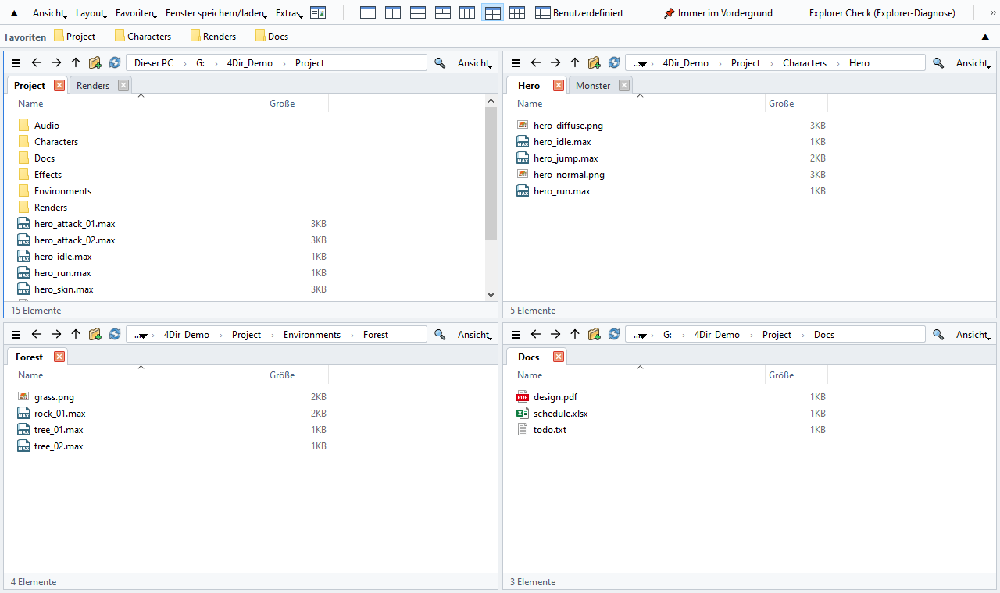
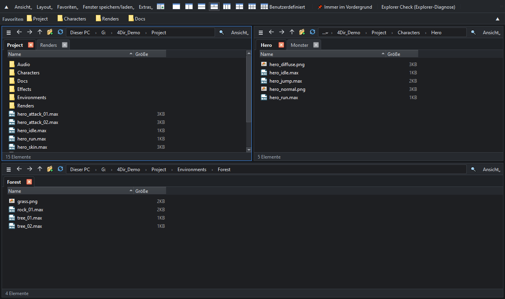

Bis zu 20 Bereiche. Tabs in jedem Bereich. Schont deinen PC.
Kostenloser Dateimanager für Windows 10/11. Keine Installation – entpacken und starten.
Windows 10/11 64-Bit · 33 MB · 2026-10-22 · kostenlos

Funktionen
Bis zu 20 Bereiche
Layouts mit 1, 2, 3, 4 oder 6 Bereichen per Klick oder ein beliebiges Raster bis 5 × 4. Jeder Bereich hat eigene Tabs.
Bremst nichts aus
Ordner werden direkt gelesen, ohne die schwere Windows-Shell-Ansicht. Im Leerlauf keine Timer und kein Polling – kann neben 3ds Max, Spielen oder anderen schweren Programmen offen bleiben.
Sofortsuche
Tippen und alle Dateinamen auf deinen Laufwerken durchsuchen. Der eigene Index aktualisiert sich in Echtzeit – ohne Administratorrechte.
SVN-Status auf einen Blick
Symbole für geändert / hinzugefügt / Konflikt direkt aus .svn gelesen – Ordner werden rot, wenn sich darin etwas geändert hat. Git und Perforce über Windows-Overlays.
Wie der Explorer
Gleiche Tastenkürzel, das vollständige Windows-Kontextmenü, Drag & Drop mit dem Explorer und anderen Programmen.
Portabel und privat
Einstellungen bleiben im 4Dir-Ordner. Helles/dunkles Design, 10 Sprachen, Stapelumbenennung, Sitzungswiederherstellung und Explorer-Diagnose inklusive.

Installation
- Lade die Zip-Datei über die Schaltfläche oben herunter (oder unter Releases auf GitHub). Das grüne „Code → Download ZIP“ auf GitHub enthält nur den Quellcode und startet nicht.
- Rechtsklick auf die Zip-Datei → Eigenschaften → Zulassen ankreuzen → OK. (Sonst zeigt Windows jedes Mal eine Sicherheitswarnung.)
- An einen beliebigen Ort entpacken und 4Dir.vbs doppelklicken.
Wenn Windows SmartScreen erscheint: Weitere Informationen → Trotzdem ausführen.
Download prüfen (optional)
In der Eingabeaufforderung certutil -hashfile 4Dir_v0.9.62.zip SHA256 ausführen – das Ergebnis muss übereinstimmen mit:
13e5c7a8830af4e487d122a30a2fcd2ef3ce6fd38885f441152c1ba12edef963
4Dir unterstützen
4Dir ist kostenlos und werbefrei. Wenn es dir Zeit spart, hilft eine kleine Spende, dass weitere Updates kommen.
Häufige Fragen
Ist es wirklich kostenlos?
Ja. 4Dir ist kostenlos und Open Source (GPL-3.0). Keine Werbung, kein Konto, keine Testphase.
Sendet es Daten?
Keine persönlichen Daten. Es prüft nur einmal täglich, ob es eine neue Version gibt (abschaltbar unter Extras).
Probleme?
Extras → Protokoll für Problembericht speichern und „Per E-Mail senden“ drücken (oder die Zip-Datei an support@4dir.net schicken). Auf GitHub geht auch ein Issue.